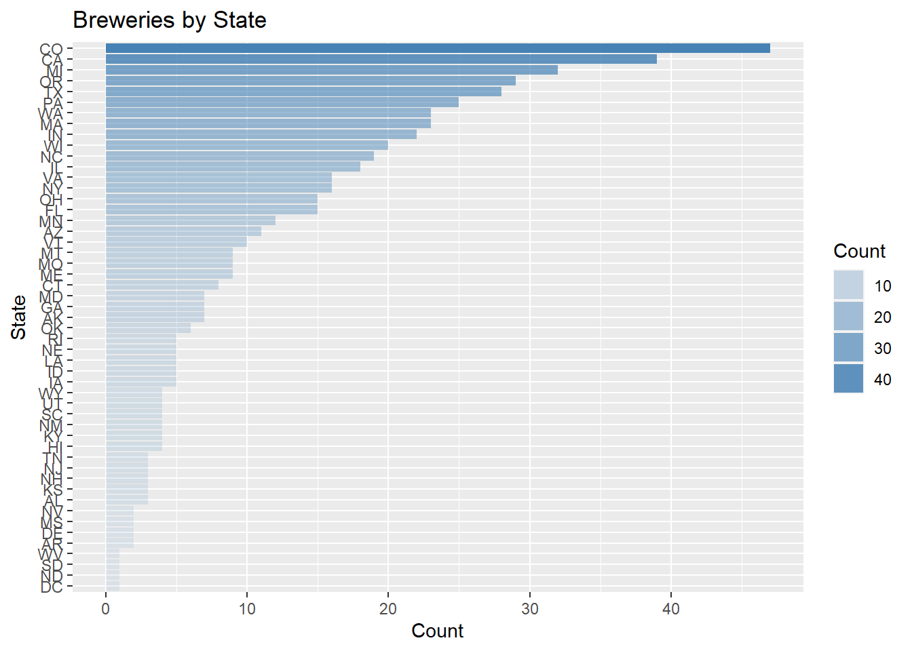
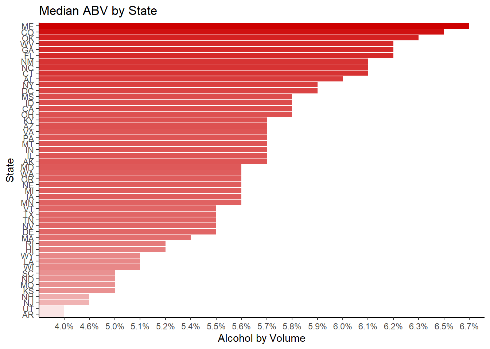
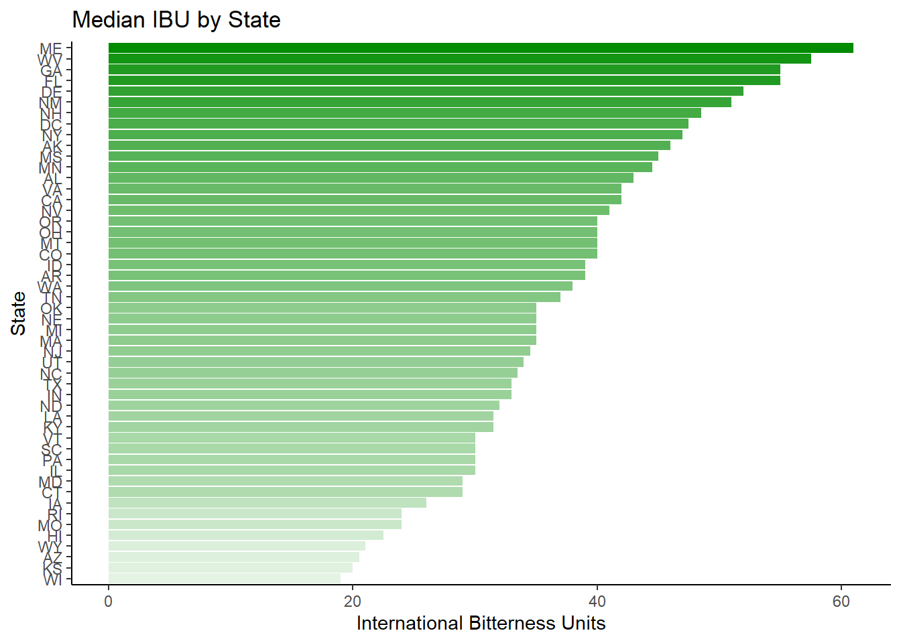
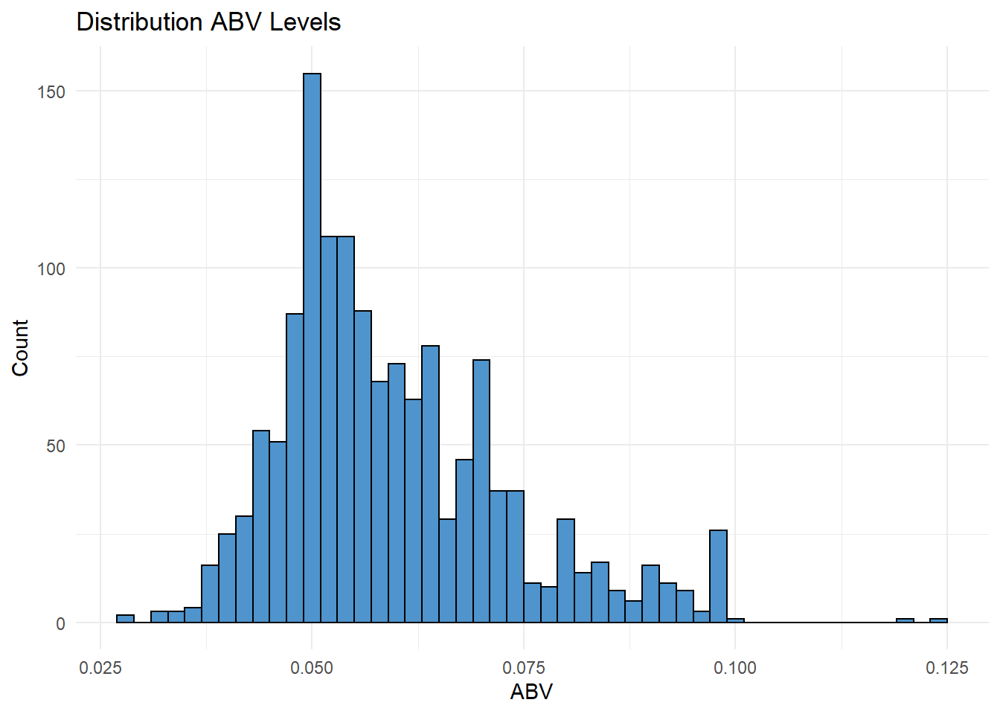
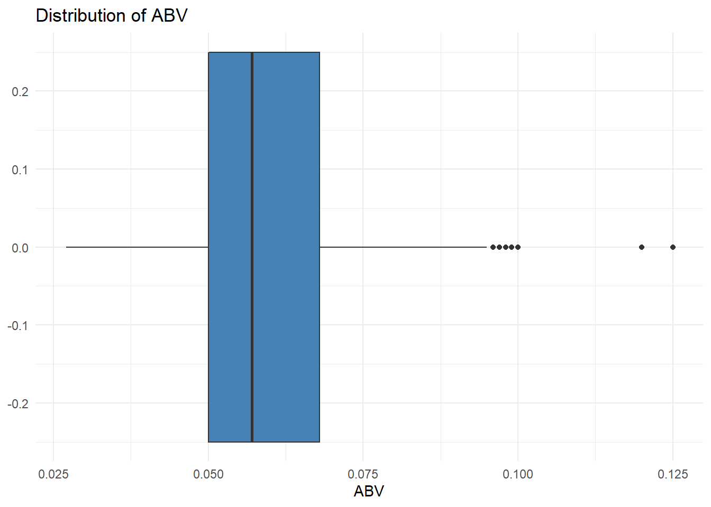
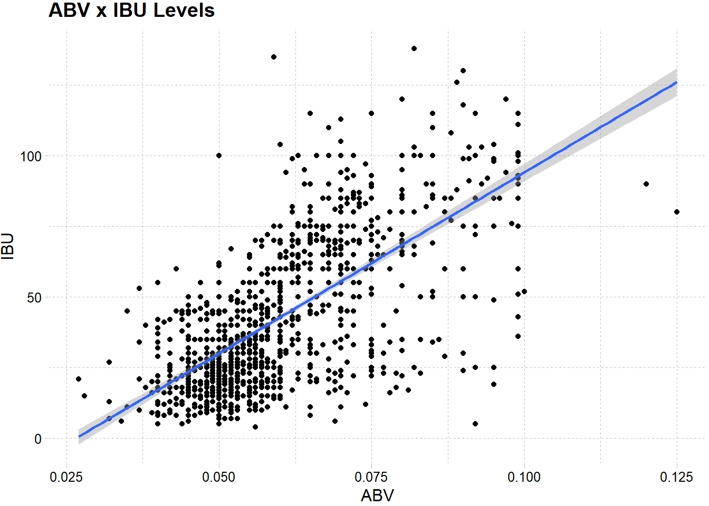
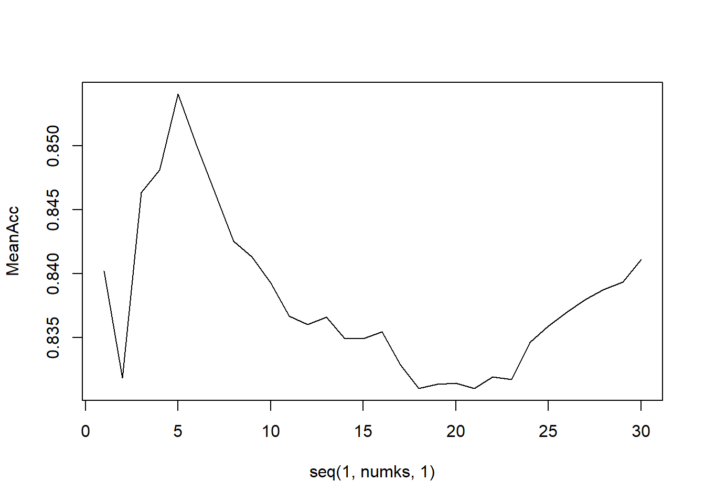
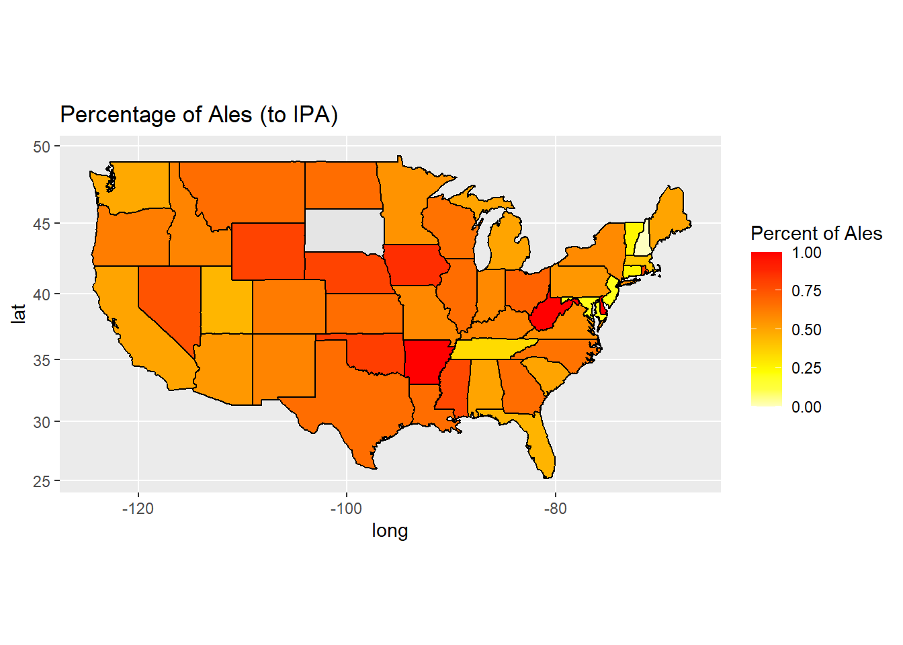
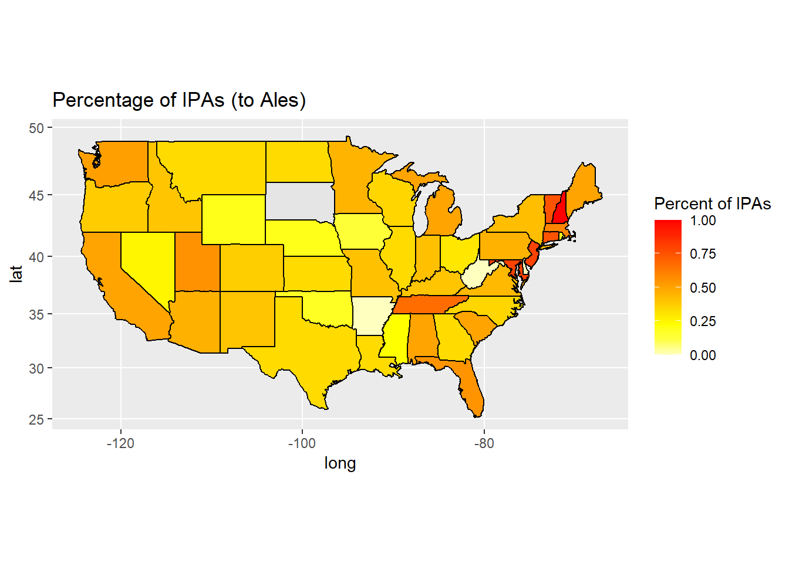

Main Questions of Interest
Question of Interest 1
How many breweries were in each state?
# We pipe the Breweries dataframe in, group calculations by State, and get an aggregate count using n().
Breweries %>%
count(State) %>%
head()## State n
## 1 AK 7
## 2 AL 3
## 3 AR 2
## 4 AZ 11
## 5 CA 39
## 6 CO 47# We plot this into a bar chart to provide a visual.
Breweries %>%
count(State) %>%
mutate(State = factor(State,
levels = State[order(n, decreasing = FALSE)])) %>%
ggplot(aes(x = State, y = n, alpha = n)) +
geom_bar(stat = 'identity', fill = 'steelblue') +
labs(y = 'Count', alpha = 'Count') +
ggtitle('Breweries by State') +
coord_flip()
Question of Interest 2
Merge the data and print the first and last six observations.
# We conduct a full/outer join to merge the two dataframes, matching based on the brewery IDs from both data frames.
BrewBeer <- full_join(Beers, Breweries, by = c('Brewery_id'='Brew_ID'))# We use head() and tail() to specify the top and bottom six observations of the merged dataframe.
head(BrewBeer, 6)## Name.x Beer_ID ABV IBU Brewery_id
## 1 Pub Beer 1436 0.050 NA 409
## 2 Devil's Cup 2265 0.066 NA 178
## 3 Rise of the Phoenix 2264 0.071 NA 178
## 4 Sinister 2263 0.090 NA 178
## 5 Sex and Candy 2262 0.075 NA 178
## 6 Black Exodus 2261 0.077 NA 178
## Style Ounces Name.y City State
## 1 American Pale Lager 12 10 Barrel Brewing Company Bend OR
## 2 American Pale Ale (APA) 12 18th Street Brewery Gary IN
## 3 American IPA 12 18th Street Brewery Gary IN
## 4 American Double / Imperial IPA 12 18th Street Brewery Gary IN
## 5 American IPA 12 18th Street Brewery Gary IN
## 6 Oatmeal Stout 12 18th Street Brewery Gary INtail(BrewBeer, 6)## Name.x Beer_ID ABV IBU Brewery_id
## 2405 Rocky Mountain Oyster Stout 1035 0.075 NA 425
## 2406 Belgorado 928 0.067 45 425
## 2407 Rail Yard Ale 807 0.052 NA 425
## 2408 B3K Black Lager 620 0.055 NA 425
## 2409 Silverback Pale Ale 145 0.055 40 425
## 2410 Rail Yard Ale (2009) 84 0.052 NA 425
## Style Ounces Name.y City State
## 2405 American Stout 12 Wynkoop Brewing Company Denver CO
## 2406 Belgian IPA 12 Wynkoop Brewing Company Denver CO
## 2407 American Amber / Red Ale 12 Wynkoop Brewing Company Denver CO
## 2408 Schwarzbier 12 Wynkoop Brewing Company Denver CO
## 2409 American Pale Ale (APA) 12 Wynkoop Brewing Company Denver CO
## 2410 American Amber / Red Ale 12 Wynkoop Brewing Company Denver COQuestion of Interest 3
Address missing values.
# We remove any observations that have NA for any variable.
BrewClean <- BrewBeer %>% na.omit()Question of Interest 4
What is the median ABV and IBU for each state? Provide a bar chart.
# We pipe the cleaned dataframe in, group calculations by state, and retrieve the median ABV and median IBU for each state.
MedBrew <- BrewClean %>%
group_by(State) %>%
summarize(MedianABV = median(ABV),
MedianIBU = median(IBU))# We first convert the State variable into a factor, determining levels to be the states ordered by median ABV in descending order.
# We then continue piping the converted dataframe into ggplot() to plot the ordered dataframe.
MedBrew %>%
mutate(State = factor(State,
levels = State[order(MedianABV, decreasing = FALSE)])) %>%
ggplot(aes(x = State, y = percent(MedianABV,accuracy = 0.1), fill = State, alpha = MedianABV)) +
geom_bar(stat = 'identity', fill = 'red3') +
labs(y = 'Alcohol by Volume', alpha = 'Median ABV') +
ggtitle("Median ABV by State") +
theme_classic() +
theme(legend.position = "none") +
coord_flip()
# We conduct the same conversion to the State variable but with median IBU.
# As above, we pipe in the dataframe and plot using ggplot().
MedBrew %>%
mutate(State = factor(State,
levels = State[order(MedianIBU, decreasing = FALSE)])) %>%
ggplot(aes(x = State, y = MedianIBU, fill = State, alpha = MedianIBU)) +
geom_bar(stat = 'identity', fill = 'green4') +
labs(y = 'International Bitterness Units', alpha = 'Median IBU') +
ggtitle("Median IBU by State") +
theme_classic() +
theme(legend.position = "none") +
coord_flip()
Question of Interest 5
Which state has the max ABV and which has the highest IBU?
# We use grep() to identify the index where the maximum ABV/IBU values are placed.
# We then pull the State value that is placed in that index.
BrewClean$State[grep(max(BrewClean$ABV),BrewClean$ABV)]## [1] KY
## 51 Levels: AK AL AR AZ CA CO CT DC DE FL GA HI IA ID IL ... WYBrewClean$State[grep(max(BrewClean$IBU),BrewClean$IBU)]## [1] OR
## 51 Levels: AK AL AR AZ CA CO CT DC DE FL GA HI IA ID IL ... WY# We also conduct a check by sorting the dataframe and looking at the top values ourselves.
# We filter the variables to ABV, IBU, and State only for easier viewing.
BrewClean %>% arrange(desc(ABV)) %>% dplyr::select(ABV, IBU, State) %>% head(3)## ABV IBU State
## 1 0.125 80 KY
## 2 0.120 90 IN
## 3 0.100 52 NYBrewClean %>% arrange(desc(IBU)) %>% dplyr::select(ABV, IBU, State) %>% head(3)## ABV IBU State
## 1 0.082 138 OR
## 2 0.059 135 VA
## 3 0.090 130 MAQuestion of Interest 6
What are the summary statistics and distribution of ABV?
# We look at the summary statistics for the dataframe.
summary(BrewClean)## Name.x Beer_ID ABV
## Nonstop Hef Hop : 12 Min. : 1 Min. :0.02700
## Dale's Pale Ale : 6 1st Qu.: 772 1st Qu.:0.05000
## Longboard Island Lager: 4 Median :1439 Median :0.05700
## 1327 Pod's ESB : 3 Mean :1415 Mean :0.05991
## Boston Lager : 3 3rd Qu.:2069 3rd Qu.:0.06800
## Dagger Falls IPA : 3 Max. :2692 Max. :0.12500
## (Other) :1374
## IBU Brewery_id Style
## Min. : 4.00 Min. : 1.0 American IPA :301
## 1st Qu.: 21.00 1st Qu.: 95.0 American Pale Ale (APA) :153
## Median : 35.00 Median :198.0 American Amber / Red Ale : 77
## Mean : 42.71 Mean :224.2 American Double / Imperial IPA: 75
## 3rd Qu.: 64.00 3rd Qu.:351.0 American Blonde Ale : 61
## Max. :138.00 Max. :547.0 American Pale Wheat Ale : 61
## (Other) :677
## Ounces Name.y City
## Min. : 8.40 Oskar Blues Brewery : 32 Portland : 41
## 1st Qu.:12.00 Sun King Brewing Company: 32 Indianapolis: 36
## Median :12.00 Sixpoint Craft Ales : 23 San Diego : 35
## Mean :13.51 Hopworks Urban Brewery : 22 Brooklyn : 28
## 3rd Qu.:16.00 Great Crescent Brewery : 20 Boulder : 26
## Max. :32.00 Stevens Point Brewery : 20 Aurora : 24
## (Other) :1256 (Other) :1215
## State
## CO :146
## CA :135
## IN : 91
## TX : 89
## OR : 87
## MA : 51
## (Other):806# We use ggplot() to retrieve a histogram of the ABV distribution.
BrewClean %>%
ggplot(aes(x = ABV)) +
geom_histogram(bins = 50, color = 'black', fill = 'steelblue3') +
labs(y = 'Count') +
ggtitle("Distribution ABV Levels") +
theme_minimal()
# We also provide a boxplot.
BrewClean %>%
ggplot(aes(x = ABV)) +
geom_boxplot(width = 0.5, fill = 'steelblue') +
#coord_cartesian(xlim=c(-0.5,0.5)) +
ggtitle('Distribution of ABV') +
theme_minimal()
The ABV variable has a right-skewed distribution, which would imply that more than half of the values fall below the mean 5.99%. We also see that the mean is larger than the median, which implies a right-skewed distribution. However, the summary statistics and histogram show us that the skewness is likely due to the upper outliers in the dataset. This is also apparent when we see the additional boxplot provided.
Question of Interest 7
Is there a relation between IBU and ABV?
# We use ggplot() to retrieve a scatterplot of the relation between ABV and IBU.
BrewClean %>%
ggplot(aes(x = ABV, y = IBU)) +
geom_point() +
geom_smooth(method = 'lm') +
ggtitle("ABV x IBU Levels") +
theme_pander()## `geom_smooth()` using formula 'y ~ x'
# We also run a correlation to obtain Pearson's r and quantify the strength of this relation.
cor(BrewClean$ABV, BrewClean$IBU, method = 'pearson')## [1] 0.6706215Based on the generated scatterplot and Pearson’s r at 0.67, we know that ABV and IBU have a medium to high positive correlation. This means that higher values of ABV are associated with higher values of IBU and that lower values of ABV are associated with lower values of IBU.
Please note that, although we observe a strong association between the two variables, we are not making any claims about the direction of the effect.
Question of Interest 8
Investigate the difference between IPAs and other Ales based on ABV and IBU.
# We create a new variable identifying beers as IPA or Ale and remove anything else.
# We also remove extra spaces in the State variable to aid in steps to come.
Ales <- BrewClean %>%
mutate(BeerType = ifelse(grepl('IPA',Style),'IPA',
ifelse(grepl('Ale',Style),'Ale','Neither')),
State = str_replace_all(State,'\\s+','')) %>%
filter(BeerType != 'Neither')# We run an external KNN classification model using 70% of the data for training and 30% for testing.
set.seed(50)
trainIndices = sample(1:dim(Ales)[1],round(0.7 * dim(Ales)[1]))
train = Ales[trainIndices,]
test = Ales[-trainIndices,]
model <- knn(train[,c('ABV','IBU')],test[,c('ABV','IBU')],train$BeerType, prob = TRUE, k = 3)
confusionMatrix(table(model,test$BeerType))## Confusion Matrix and Statistics
##
##
## model Ale IPA
## Ale 140 16
## IPA 20 107
##
## Accuracy : 0.8728
## 95% CI : (0.8283, 0.9093)
## No Information Rate : 0.5654
## P-Value [Acc > NIR] : <2e-16
##
## Kappa : 0.7421
##
## Mcnemar's Test P-Value : 0.6171
##
## Sensitivity : 0.8750
## Specificity : 0.8699
## Pos Pred Value : 0.8974
## Neg Pred Value : 0.8425
## Prevalence : 0.5654
## Detection Rate : 0.4947
## Detection Prevalence : 0.5512
## Balanced Accuracy : 0.8725
##
## 'Positive' Class : Ale
## iterations = 50
numks = 30
masterAcc = matrix(nrow = iterations, ncol = numks)
for(j in 1:iterations) {
accs = data.frame(accuracy = numeric(30), k = numeric(30))
trainIndices = sample(1:dim(Ales)[1],round(0.7 * dim(Ales)[1]))
train = Ales[trainIndices,]
test = Ales[-trainIndices,]
for(i in 1:numks) {
classifications = knn(train[,c('ABV','IBU')],test[,c('ABV','IBU')],train$BeerType, prob = TRUE, k = i)
table(classifications,test$BeerType)
CM = confusionMatrix(table(classifications,test$BeerType))
masterAcc[j,i] = CM$overall[1]
}
}
MeanAcc = colMeans(masterAcc)
plot(seq(1,numks,1),MeanAcc, type = "l")
which.max(MeanAcc) # Which inumks is max?## [1] 5max(MeanAcc)## [1] 0.8540636Although we checked accuracy based on multiple iterations, we report on a single run using a specific seed for reproducibility.
The overall accuracy of our external KNN classification model was 87.2%.
Given no information and guessing all classifications to be other Ales, accuracy was 56.5%
The sensitivity, or the model’s ability to accurately classify other Ales, was 87.5%.
The specificity, or the model’s ability to accurately classify IPAs, was 86.7%.
Additional methods of investigating this relation were not included in the presentation due to time constraints.
To view them, please scroll down to the end of this file.
Question of Interest 9
What are some additional insights from exploring the data?
# We create a summary of the data to view information by State.
# Please note that we did not use all the summarized variables in our final analyses.
AlesSummary <- Ales %>%
group_by(State) %>%
summarize(medianABV = median(ABV),
medianIBU = median(IBU),
AleToIPA = sum(BeerType == 'Ale')/sum(BeerType == 'IPA'),
IPAToAle = sum(BeerType == 'IPA')/sum(BeerType == 'Ale'),
AlePercent = sum(BeerType == 'Ale')/sum(grepl('IPA|Ale',BeerType)),
IPAPercent = sum(BeerType == 'IPA')/sum(grepl('IPA|Ale',BeerType))
) %>%
mutate(State = str_replace_all(State,'\\s+',''))# We retrieve a dataframe delineating the boundaries of each US state and change state names to be lowercase.
# This is preparation to join it with our dataframe created above.
states <- map_data("state") %>%
mutate(State = state.abb[match(region,tolower(state.name))])
# We join the data to our summary dataframe above.
map.df <- full_join(states, AlesSummary, by = 'State')
map.df <- map.df[order(map.df$order),]# We plot the data onto a heatmap, filling states based on the percentage of Ales to IPAs.
map.df %>%
ggplot(aes(x=long,y=lat,group=group))+
geom_polygon(aes(fill=AlePercent))+
geom_path()+
scale_fill_gradientn(colours=rev(heat.colors(10)),na.value="grey90")+
coord_map() +
ggtitle("Percentage of Ales (to IPA)") +
labs(fill = "Percent of Ales")## Warning: Removed 3 row(s) containing missing values (geom_path).
# We plot the data onto a heatmap, filling states based on the percentage of IPAs to Ales.
map.df %>%
ggplot(aes(x=long,y=lat,group=group))+
geom_polygon(aes(fill=IPAPercent))+
geom_path()+
scale_fill_gradientn(colours=rev(heat.colors(10)),na.value="grey90")+
coord_map() +
ggtitle("Percentage of IPAs (to Ales)") +
labs(fill = "Percent of IPAs")## Warning: Removed 3 row(s) containing missing values (geom_path).